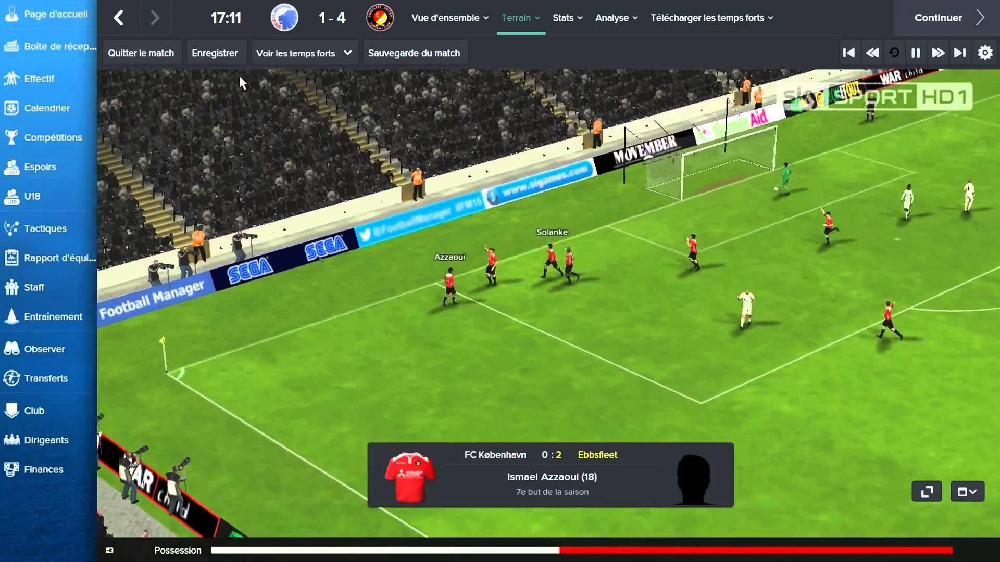

Un videojuego de deporte es un videojuego de consola o de computadora que simula el campo de deportes tradicionales. Estos videojuegos son sumamente populares, el género incluye algunos de los videojuegos con más éxito de venta. Casi todos los deportes conocidos han sido recreados con un videojuego, incluyendo béisbol, fútbol, fútbol americano, boxeo, lucha libre, críquet, golf, básquetbol, hockey sobre hielo, bolos, rugby, caza, pesca, skate, artes marciales mixtas, tabla sobre nieve, etc. Algunos videojuegos resaltan en realidad el campo de juego (tal como el Madden NFL), mientras otros destacan la estrategia detrás del deporte (tal como el Championship Manager). Otros satirizan el deporte con efectos cómicos (tal como Arch Rivals). Este género ha sido popular en toda la historia de los videojuegos y es sumamente competitivo, justo como los verdaderos deportes mundiales. Varias series de videojuegos destacan los nombres y características de equipos verdaderos y jugadores, y son puestos al día cada año para reflejar cambios verdaderos mundiales. El género no debe ser confundido con el término deportes electrónicos, que es usado para describir los videojuegos que son jugados como deportes competitivos.
Uno de los primeros videojuegos de la historia, Tennis for Two (1958), era un videojuego de deporte. Los videojuegos de ordenador antes de los últimos años 1970 eran principalmente jugados en la universidad con computadoras centrales bajo el sistema de tiempo compartido sostenidos por terminales de computadora en campuses de escuela. Los dos sistemas dominantes eran el PDP-10 de Digital Equipment Corporation y el Sistema PLATO de la Control Data Corporation. Estos sistemas no muestran ninguna gráfica, solo texto. A principios de 1970 ellos imprimieron el texto sobre máquinas de teletipo e impresoras de línea, pero a mediados de los setenta el texto se imprimía en color simple en las pantallas CRT.
Los videojuegos de deporte se acaban convirtiendo en un gran negocio. El 13 de diciembre de 2004, Electronic Arts eralizó una serie de acuerdos que concedieron derechos exclusivos a varias organizaciones prominentes deportivas, comenzando con la NFL. Esto rápidamente fue seguido con dos tratos en enero asegurando derechos al AFL2 y licencias a ESPN. Esto fue particularmente un golpe duro para Sega, el titular anterior de la licencia de ESPN, quien ya se había visto afectado por el trato de EA con NFL. Como el mercado para marcas de fútbol rápidamente fue tomado por EA, Take-Two Interactive responde poniéndose en contacto con la Major League Baseball Players Association, y firma un contrato que le concedió derechos exclusivos de béisbol; Un contrato no restrictivo, como todavía permitían a proyectos del primer partido. Varios desarrolladores se acercaron a la NBA, pero se negó a firmar un acuerdo de exclusividad, en lugar de eso concedió a largo plazo para licencias a Electronic Arts, Take-Two Interactive, Midway Games, Sony y Atari. En Abril, EA promueve su control sobre la concesión de licencias de fútbol de garantías de los derechos a todas las marcas de fútbol de NCAA. También, en cuanto a la actualidad, la palma se la lleva un juego muy popular desarrollado por EA sports llamado:FIFA este juego está arrasando en todas las generaciones, ya que, hoy en día el fútbol es el deporte rey.